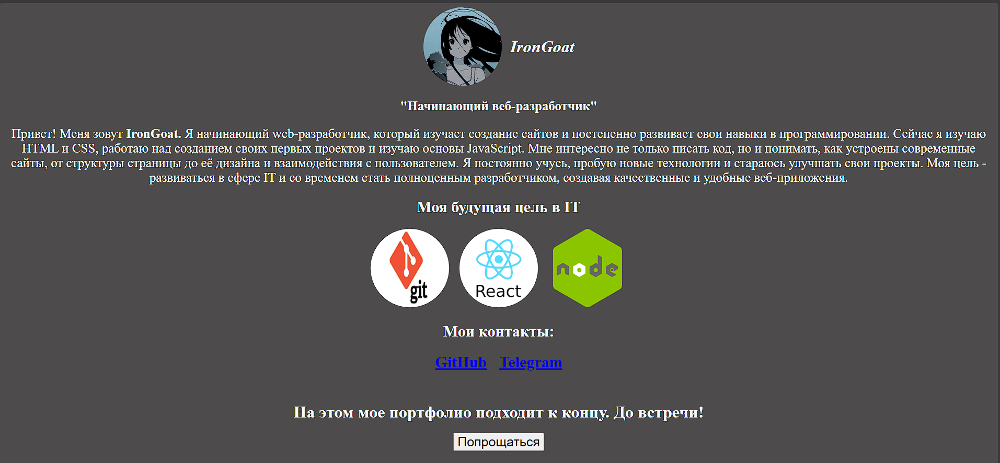
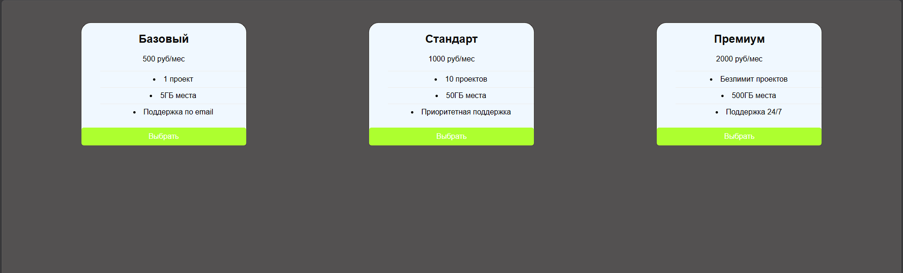
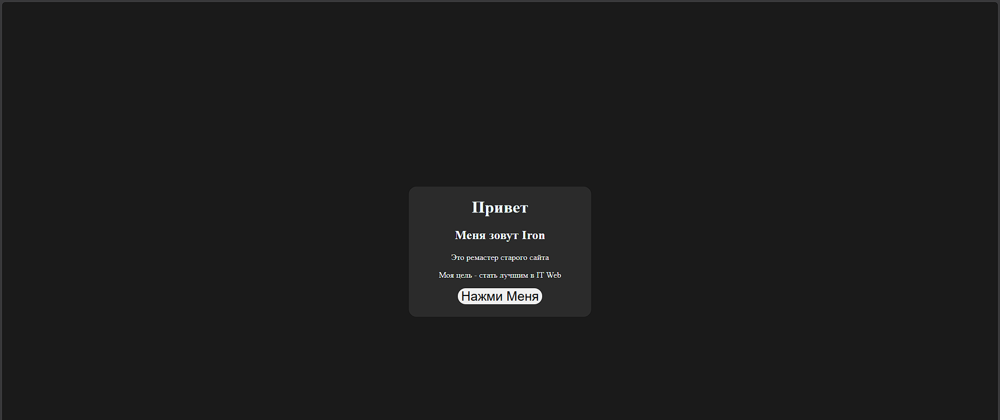
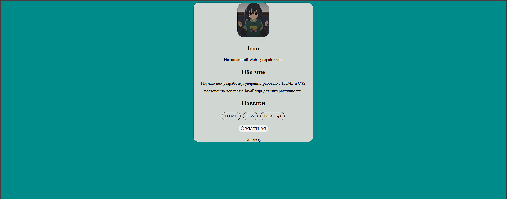
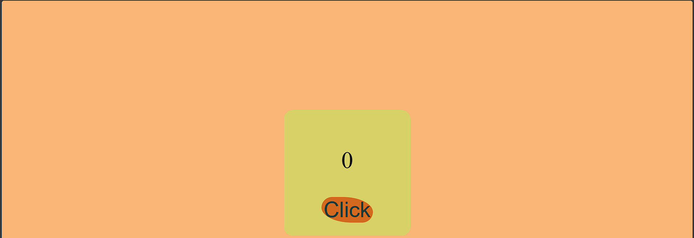

First portolio
Буквально первое мое портфолио.
В нем нет никаких спецээфектов, лишь обо мне, и кнопка в конце (это серьезно)
Не такая уж и сложная, но для того моего навыка - это было хорошо.

Буквально первое мое портфолио.
В нем нет никаких спецээфектов, лишь обо мне, и кнопка в конце (это серьезно)
Не такая уж и сложная, но для того моего навыка - это было хорошо.

Мой наверно первый проект с карточками.
Выглядит он также по обычному, кнопки не кликабельны.
Но все же, проект - есть проект.

Конечно, не официальный тутор.
Этот сайт был одним из заданий от claude, с которым я более менее, но справился
Мне нравится данный сайт своими цветами, и то, как все выглядит (даже если там и мало деталей).

Первый сайт был написан благодаря ChatGPT.
А этот сайт был написан полностью мной, своими руками.
Выглядит прикольно, с капелькой JavaScript.

Выглядит прикольно по цветам и по самой карточке.
Данный проект что то вроде мини портфолио.
Пометка:написано своими руками.

Первый мой такой проект.
Наверно, когда заного буду изучать JS, повторю что то подобное.
В целом, это мой первый проект, связанный с кликером.